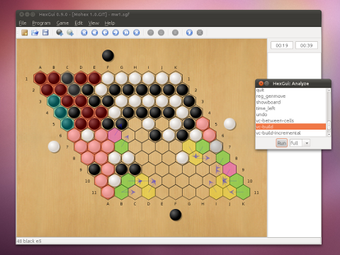

Benzene

Benzene is a collection of C++ libraries for developing software for
the game of Hex. It includes two Hex players using classic Alpha-Beta
and Monte-Carlo tree search.
The initial version of the code was released by the
Computer Hex Group at
the University of Alberta. It is dependent on the
Fuego libraries for its
implementation of Monte-Carlo tree search.
Benzene is available under the terms of the
GNU Lesser General Public License.
Documentation
-
Developer documentation
(for current release)
-
Interested in the current ongoing Benenze development?
Benzene trac has many suggested
tickets describing work that would improve Benzene.
-
A Benzene
wiki is slowly under construction. It will contain additional
useful information which is not contained in the release
documentation. Examples are: frequently asked questions (FAQ),
description and documentation of experiments, games played, useful
scripts.
Publications
- B. Arneson, R. Hayward, and P. Henderson. Monte Carlo Tree Search in Hex. To appear in Transactions on Computational Intelligence and AI in Games.
- B. Arneson, R. Hayward, and P. Henderson. Solving Hex: Beyond Humans. To appear in Computers and Games, 15th Int'l Conf: CG 2010 (Kanazawa), H.J. van den Herik and A. Plaat eds., Springer LNCS.
- P. Henderson and R. Hayward. A Hex Handicap Strategy. To appear in Games of No Chance 4, Cambridge University Press.
- P. Henderson, B. Arneson, and R. Hayward. Hex, Braids, the Crossing Rule, and XH-search. Advances in Computer Games, 12th Int'l Conf: ACG 2009 (Pamplona), H.J. van den Herik and P. Spronck eds., Springer LNCS 6048 88-98, 2010.
- B. Arneson, R. Hayward, P. Henderson. MoHex Wins Hex Tournament. International Computer Games Association (ICGA) Journal 32 (2), 114-116, 2009.
- P. Henderson, B. Arneson, and R. Hayward. Solving 8x8 Hex. Proc. IJCAI-09 505-510, 2009.
- R. Hayward. A puzzling Hex primer. Games of No Chance 3, M.H. Albert and R.J. Nowakowski eds., Cambridge University Press (MSRI publications) 56:151--162, 2009.
- B. Arneson, R. Hayward, P. Henderson. Wolve 2008 Wins Hex Tournament. ICGA Journal 32 (1), 49-53, 2009.
- P. Henderson and R. Hayward. Probing the 4-3-2 Edge Template in Hex. H.J. van den Herik et al. eds.: CG 2008, Springer LNCS 5131, 229--240, 2008.
- R. Hayward and J. van Rijswijck. Hex and Combinatorics. Discrete Math 306, 2515-2528, 2006.
- Y. Bjornsson, R. Hayward, M. Johanson, J. van Rijswijck. Dead Cell Analysis in Hex and the Shannon Game. Graph Theory in Paris: Proc. of a Conference in Memory
of Claude Berge (GT04 Paris), Birkauser 2007, 45-60.
- R. Hayward, Y. Bjornsson, M. Johanson, N. Po, J. van Rijswijck. Solving 7x7 Hex with domination, fill-in, and virtual connections (part I), (part II). Theoretical Computer Science 349, 123-139, 2005.
- R. Hayward. A Note on Domination in Hex. Manuscript 2003, revised 2004.
- R. Hayward. Berge and the Art of Hex (draft). Book chapter submitted to Princeton University Press, 2003.
Theses
Bug reports
Please report bugs in the release and development versions of Benzene
to the
benzene-devel
mailing list, or
submit a ticket to the
Benzene trac bug tracking system.
Tournament results
Our Hex AIs have claimed both the gold and silver medals in each of the last three olympiads.
Online Competitions
We hope to soon make our players available on LittleGolem.